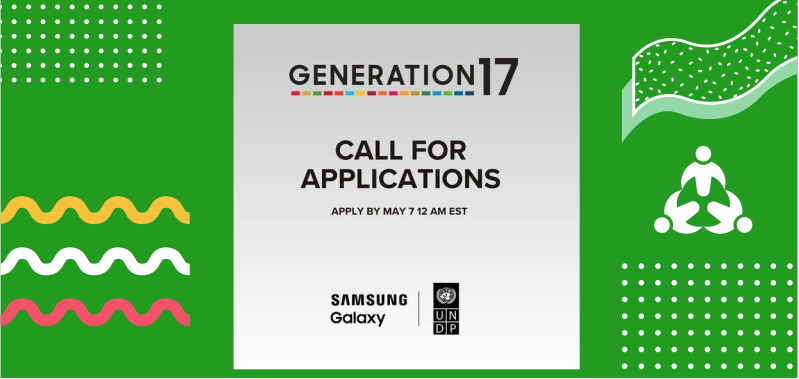

07
May
Call for applications for the Samsung-UNDP Generation 17 for Young Change Makers
The United Nations Development Programme (UNDP) and Samsung Mobile are thrilled to announce the expansion of Generation17 – a joint initiative aimed at empowering young changemakers to achieve the Global Goals.
Overview
Generation17 elevates the voices of young leaders who are changing the world and contributing to the achievement of the Sustainable Development Goals (SDGs) or ‘Global Goals.’ Samsung and UNDP are providing mentorship, technology, and networking opportunities for the young leaders as they advance their work.
UNDP and Samsung Mobile have gathered 14 young leaders across six regions who are working on issues that touch all 17 of the Global Goals. With this open call for applications, UNDP and Samsung Mobile look forward to increasing Generation17’s impact and empowering even more communities to take concrete action for the Goals.
Eligibility
Demographics
You are between the ages of 18-30 years at the time of applicationImpact Leadership
- Your organization/initiative has been active for at least 6 months.
- Your organization/initiative addresses multiple Global Goals and represents a range of focus areas, e.g., underserved populations, LGBTQIA+ advocates, persons with disabilities (PSD), native communities, etc.
- You are not currently enrolled as an individual in any UN-related programs, sponsored by any UN agency or selected to represent other programs or initiatives at the time of application.
- You are forward-thinking and innovative
- You have demonstrated experience working to advance the Global Goals at the local, national or regional levels and are committed to issue advocacy and the 2030 Agenda.
- You have ongoing support from the local community which your organization supports
- You are currently involved with leading youth networks, movements, organizations or support youth-led entrepreneurship.
- You oversee and/or partner with a broader team in your existing role
Storytelling & Resonance
- You are active on social media or are willing to engage on social media
- There is no active criticism of you/your organization
- There is no evidence of your active criticism of prominent brands on social media
- You speak English and have excellent public speaking, communication and leadership skills
- You have demonstrated a commitment to solving social challenges and an ability to lead and inspire others effectively
- Your work has the potential to shift human behavior, inspire youth to take action and build a sense of community
Selection Process
- Generation17 Young Leaders are a diverse group of individuals who have already delivered impactful solutions for the Global Goals yet may not have had the means to amplify their voices to a wider audience. These young leaders were identified by UNDP and selected in partnership with Samsung based on their outstanding existing initiatives and impressive advocacy work. Additional candidates are expected to be nominated to grow the initiative and include young people from across the world.
- Once you’re selected, you’ll have the opportunity to network and engage with a group of inspiring young leaders who are advocating for meaningful change. UNDP and Samsung Mobile will open access to their technology, knowledge and global platforms and connections to enable your success and scale the impact and visibility of your organization(s).